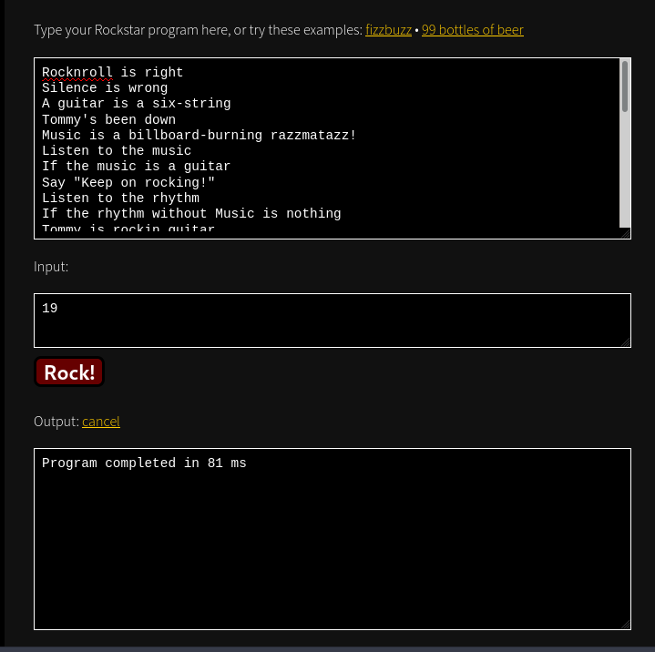
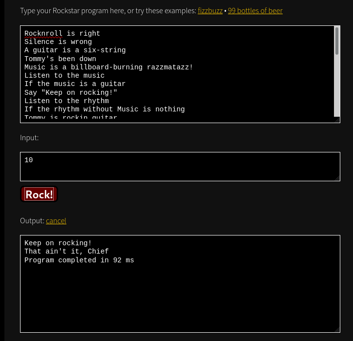
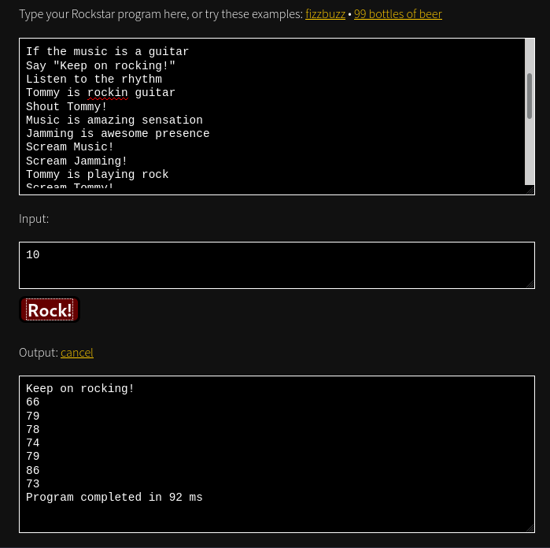

PicoCTF 2019 - General Skills
Let’s Warm Up [50]
Description
If I told you a word started with 0x70 in hexadecimal, what would it start with in ASCII?
Solution
A look at the ASCII manual should help!
$ man ascii
Then, it’s just a matter of finding the right line, the one that has 70 in the Hex column.
Oct Dec Hex Char Oct Dec Hex Char
────────────────────────────────────────────────────────────────────────
[...]
060 48 30 0 160 112 70 p
Flag: picoCTF{p}
2Warm [50]
Description
Can you convert the number 42 (base 10) to binary (base 2)?
Solution
Sure thing! Python can easily do that with its bin built-in:
$ python -c "print(bin(42))"
0b101010
Flag: picoCTF{101010}
Warmed Up [50]
Description
What is 0x3D (base 16) in decimal (base 10).
Solution
Python prints anything in base 10 by default.
$ python -c "print(0x3D)"
61
Flag: picoCTF{61}
Bases [100]
Description
What does this bDNhcm5fdGgzX3IwcDM1 mean? I think it has something to do with bases.
Hint: Submit your answer in our competition’s flag format. For example, if you answer was ‘hello’, you would submit ‘picoCTF{hello}’ as the flag.
Solution
The mysterious text is encoded using base64. You can usually spot it because it uses characters from a-z, A-Z, 0-9, +, / and ends with one or more = for padding. The base64 program, called with the option will try to decode any base64 input:
$ echo "bDNhcm5fdGgzX3IwcDM1" | base64 -d
l3arn_th3_r0p35
Flag: picoCTF{l3arn_th3_r0p35}
First Grep [100]
Description
Can you find the flag in file? This would be really tedious to look through manually, something tells me there is a better way. You can also find the file in /problems/first-grep_6_c2319e8af66fa6bec197edc733dd52dd on the shell server.
Hint: grep tutorial
Solution
grep is a program to find something in a file (or a bunch of files). It needs the following arguments: grep <stuff-I'm-looking-for> <file-in-which-to-search>. Look for the beginning of the flag with:
$ grep "picoCTF" file
picoCTF{grep_is_good_to_find_things_fce80031}
Flag: picoCTF{grep_is_good_to_find_things_fce80031}
Resources [100]
Description
We put together a bunch of resources to help you out on our website! If you go over there, you might even find a flag! https://picoctf.com/resources (link)
Solution
Visit the resources pages to find the flag :)
Flag: picoCTF{r3source_pag3_f1ag}
Strings It [100]
Description
Can you find the flag in file without running it? You can also find the file in /problems/strings-it_6_f71e1644786ed3c019c38d961f6e29de on the shell server.
Hint: strings
Solution
strings will print all the strings found in a file. Combined with grep to filter the output:
$ strings strings | grep picoCTF
picoCTF{5tRIng5_1T_976fbd5c}
Flag: picoCTF{5tRIng5_1T_976fbd5c}
What’s a Net Cat? [100]
Description
Using netcat (nc) is going to be pretty important. Can you connect to 2019shell1.picoctf.com at port 47229 to get the flag?
Hint: nc tutorial
Solution
From the man page:
Netcat is a simple Unix utility which reads and writes data across network connections, using TCP or UDP protocol.
Note that the actual command to run netcat is nc though:
$ nc 2019shell1.picoctf.com 47229
You're on your way to becoming the net cat master
picoCTF{nEtCat_Mast3ry_bfae0e4c}
First Grep: Part II [200]
Description
Can you find the flag in /problems/first-grep–part-ii_4_ca16fbcd16c92f0cb1e376a6c188d58f/files on the shell server? Remember to use grep.
Hint: grep tutorial
Solution
Similar to the first challenge, we should use grep to find the flag. Except we have a bunch of files instead of just one.
man grep has a good option to help in that case:
-r, –recursive Read all files under each directory, recursively, following symbolic links only if they are on the command line. Note that if no file operand is given, grep searches the working directory. This is equivalent to the -d recurse option.
kylma@pico-2019-shell1:~$ cd /problems/first-grep--part-ii_4_ca16fbcd16c92f0cb1e376a6c188d58f/files
kylma@pico-2019-shell1:/problems/first-grep--part-ii_4_ca16fbcd16c92f0cb1e376a6c188d58f/files$ ls
files0 files1 files10 files2 files3 files4 files5 files6 files7 files8 files9
kylma@pico-2019-shell1:/problems/first-grep--part-ii_4_ca16fbcd16c92f0cb1e376a6c188d58f/files$ grep -nr picoCTF
files6/file5:2:picoCTF{grep_r_to_find_this_0e28f3ee}
Flag: picoCTF{grep_r_to_find_this_0e28f3ee}
Plumbing [200]
Description
Sometimes you need to handle process data outside of a file. Can you find a way to keep the output from this program and search for the flag? Connect to 2019shell1.picoctf.com 18944.
Hints:
- Remember the flag format is picoCTF{XXXX}
- What’s a pipe? No not that kind of pipe… This kind
Solution
If we connect to the given address, a big phat bunch of text greets us:
$ nc 2019shell1.picoctf.com 18944
[...]
I don't think this is a flag either
This is defintely not a flag
This is defintely not a flag
Not a flag either
I don't think this is a flag either
Again, I really don't think this is a flag
This is defintely not a flag
A pipe, represented by | can redirect the output of one command to another command. For example, if we take this as first command:
$ echo "on the internet, nobody knows you're a cat"
on the internet, nobody knows you're a cat
Let’s say you want to know if the sentence written with echo contains the word dog. Drawing inspirations from previous challenges, grep is super skilled at finding stuff! To search for the word dog, grep dog would do the trick. Now, all that’s left is to combine the two, and this is precisely why | exists:
$ echo "on the internet, nobody knows you're a cat" | grep dog
< will not output anything since dog is not in the sentence, I know, what a surprise huh >
If you really want to output something, look for the word cat instead:
$ echo "on the internet, nobody knows you're a cat" | grep cat
on the internet, nobody knows you're a cat
Back to our flag now, redirect the input of nc to grep so that it can filter lines that start like a flag, with picoCTF:
$ nc 2019shell1.picoctf.com 18944 | grep picoCTF
picoCTF{digital_plumb3r_1d5b7de7}
Flag: picoCTF{digital_plumb3r_1d5b7de7}
Where Is the File [200]
Description
I’ve used a super secret mind trick to hide this file. Maybe something lies in /problems/where-is-the-file_4_f26b413d005c16c61f127740ab242b35.
Hints:
- What command can see/read files?
- What’s in the manual page of ls?
Solution
The command ls can list files:
kylma@pico-2019-shell1:~$ cd /problems/where-is-the-file_4_f26b413d005c16c61f127740ab242b35
kylma@pico-2019-shell1:/problems/where-is-the-file_4_f26b413d005c16c61f127740ab242b35$ ls
kylma@pico-2019-shell1:/problems/where-is-the-file_4_f26b413d005c16c61f127740ab242b35$
Lies! There are no files here! Actually, reading the man page of ls, there’s a trick:
-a, –all do not ignore entries starting with .
On Unix, files with a name starting with a . are hidden files and will not appear by default. Unless you tell ls to list them by using the option -a.
kylma@pico-2019-shell1:/problems/where-is-the-file_4_f26b413d005c16c61f127740ab242b35$ ls -la
total 80
drwxr-xr-x 2 root root 4096 Sep 28 22:05 .
drwxr-x--x 684 root root 69632 Sep 29 03:37 ..
-rw-rw-r-- 1 hacksports hacksports 39 Sep 28 22:05 .cant_see_me
See, that directory wasn’t empty after all! Now, to print the content of the file, cat can do so:
kylma@pico-2019-shell1:/problems/where-is-the-file_4_f26b413d005c16c61f127740ab242b35$ cat .cant_see_me
picoCTF{w3ll_that_d1dnt_w0RK_cb4a5081}
Flag: picoCTF{w3ll_that_d1dnt_w0RK_cb4a5081}
What’s the difference [200]
Description
Can you spot the difference? kitters cattos. They are also available at /problems/whats-the-difference_0_00862749a2aeb45993f36cc9cf98a47a on the shell server
Hints:
- How do you find the difference between two files?
- Dumping the data from a hex editor may make it easier to compare.
Solution
Two files are given, kitters.jpg and cattos.jpg. kitters.jpg is a regular picture of 2 cats, cattos.jpg is the glitchy version of the same picture.
diff can compare 2 files and list the differences lines per line:
$ diff kitters.jpg cattos.jpg
Binary files kitters.jpg and cattos.jpg differ
Except that it doesn’t do well with binary files… xxd can make the hexdump of a file though, it will probably be easier to compare. The -p option enables the plaintext hexdump style.
$ xxd -p kitters.jpg kitters.xxd
$ xxd -p cattos.jpg cattos.xxd
Now we can call diff again on the two hexdumps, and use > results.diff to store the results in a new file.
$ diff kitters.xxd cattos.xxd > results.diff
We can manually get the flag from results.diff by taking only the differences:
-0000c240: 21d3 6da6 4b70 6963 6f60 1b95 41e8 b93d !.m.Kpico`..A..=
+0000c240: 21d3 6da6 4b99 9d98 c860 1b95 41e8 b93d !.m.K....`..A..=
But I got bored of doing it manually and I wasn’t even past picoCTF :DD
Instead, I wrote a Python script to compare each byte in the two images:
#!/usr/bin/env python3
kitters = open("kitters.jpg", "rb").read()
cattos = open("cattos.jpg", "rb").read()
flag = []
for i in range(len(kitters)):
if kitters[i] != cattos[i]:
flag.append(chr(cattos[i]))
print("".join(flag))
$ ./solve.py
picoCTF{th3yr3_a5_d1ff3r3nt_4s_bu773r_4nd_j311y_aslkjfdsalkfslkflkjdsfdszmz10548}
Flag: picoCTF{th3yr3_a5_d1ff3r3nt_4s_bu773r_4nd_j311y_aslkjfdsalkfslkflkjdsfdszmz10548}
Based [200]
Description
To get truly 1337, you must understand different data encodings, such as hexadecimal or binary. Can you get the flag from this program to prove you are on the way to becoming 1337? Connect with nc 2019shell1.picoctf.com 28758.
Hints:
- I hear python can convert things.
- It might help to have multiple windows open
Solution
Let’s connect and see what the conversions look like:
$ nc 2019shell1.picoctf.com 28758
Let us see how data is stored
oven
Please give the 01101111 01110110 01100101 01101110 as a word.
First challenge uses the binary representation
Please give me the 156 165 162 163 145 as a word
Second challenge probably uses the octal representation as there is no digit > 7
Please give me the 6f76656e as a word
Third challenge is probably good old hexadecimal.
I ended up writing a Python script to do the conversions and send them back automatically. It was totally overkill, but I didn’t know there would be only 3 conversions to do, did I?
#!/usr/bin/env python
"""
nc 2019shell1.picoctf.com 28758
"""
import socket
import binascii
PORT = 28758
HOSTNAME = "2019shell1.picoctf.com"
s = socket.socket(socket.AF_INET, socket.SOCK_STREAM)
s.connect(( HOSTNAME, PORT ))
def receive():
data = s.recv(1024)
data = data.decode("utf-8").split("\n")
print(data)
return data
def send(answer):
print("SENDING", answer)
s.sendall(bytes(answer + "\n", "utf-8"))
# Please give the 01101111 01110110 01100101 01101110 as a word
def level_1():
data = receive()
send(data[1])
# Please give me the 156 165 162 163 145 as a word
def level_2():
data = receive()
data = data[0].split(" ")
new_list = []
for d in data:
if d.isdigit():
d = chr(int(d, 8))
new_list.append(d)
send("".join(new_list))
# Please give me the 6f76656e as a word
def level_3():
data = receive()[0]
data = data.split(" ")[4]
data = binascii.unhexlify(data)
data = data.decode("utf-8")
send(data)
def level_4():
data = receive()
level_1()
level_2()
level_3()
level_4()
$ ./solve.py
['Let us see how data is stored', 'light', 'Please give the 01101100 01101001 01100111 01101000 01110100 as a word.', '...', 'you have 45 seconds.....', '', 'Input:', '']
SENDING light
['Please give me the 143 157 154 157 162 141 144 157 as a word.', 'Input:', '']
SENDING colorado
['Please give me the 6368616972 as a word.', 'Input:', '']
SENDING chair
["You've beaten the challenge", 'Flag: picoCTF{learning_about_converting_values_4b4e293e}', '']
Flag: picoCTF{learning_about_converting_values_4b4e293e}
flag_shop [300]
Description
There’s a flag shop selling stuff, can you buy a flag? Source. Connect with nc 2019shell1.picoctf.com 3967.
Hint: Two’s compliment can do some weird things when numbers get really big!
#include <stdio.h>
#include <stdlib.h>
int main()
{
setbuf(stdout, NULL);
int con;
con = 0;
int account_balance = 1100;
while(con == 0){
printf("Welcome to the flag exchange\n");
printf("We sell flags\n");
printf("\n1. Check Account Balance\n");
printf("\n2. Buy Flags\n");
printf("\n3. Exit\n");
int menu;
printf("\n Enter a menu selection\n");
fflush(stdin);
scanf("%d", &menu);
if(menu == 1){
printf("\n\n\n Balance: %d \n\n\n", account_balance);
}
else if(menu == 2){
printf("Currently for sale\n");
printf("1. Defintely not the flag Flag\n");
printf("2. 1337 Flag\n");
int auction_choice;
fflush(stdin);
scanf("%d", &auction_choice);
if(auction_choice == 1){
printf("These knockoff Flags cost 900 each, enter desired quantity\n");
int number_flags = 0;
fflush(stdin);
scanf("%d", &number_flags);
if(number_flags > 0){
int total_cost = 0;
total_cost = 900*number_flags;
printf("\nThe final cost is: %d\n", total_cost);
if(total_cost <= account_balance){
account_balance = account_balance - total_cost;
printf("\nYour current balance after transaction: %d\n\n", account_balance);
}
else{
printf("Not enough funds to complete purchase\n");
}
}
}
else if(auction_choice == 2){
printf("1337 flags cost 100000 dollars, and we only have 1 in stock\n");
printf("Enter 1 to buy one");
int bid = 0;
fflush(stdin);
scanf("%d", &bid);
if(bid == 1){
if(account_balance > 100000){
FILE *f = fopen("flag.txt", "r");
if(f == NULL){
printf("flag not found: please run this on the server\n");
exit(0);
}
char buf[64];
fgets(buf, 63, f);
printf("YOUR FLAG IS: %s\n", buf);
}
else{
printf("\nNot enough funds for transaction\n\n\n");
}}
}
}
else{
con = 1;
}
}
return 0;
}
Solution
So, flagshop is a tiny program which sells flag (I bet you didn’t guess from the name right?). Let’s poke it a bit to see how it works:
$ gcc store.c -o flagshop
$ ./flagshop
Welcome to the flag exchange
We sell flags
1. Check Account Balance
2. Buy Flags
3. Exit
Enter a menu selection
2
Currently for sale
1. Defintely not the flag Flag
2. 1337 Flag
1
These knockoff Flags cost 900 each, enter desired quantity
1
The final cost is: 900
Your current balance after transaction: 200
Welcome to the flag exchange
We sell flags
1. Check Account Balance
2. Buy Flags
3. Exit
Enter a menu selection
2
Currently for sale
1. Defintely not the flag Flag
2. 1337 Flag
2
1337 flags cost 100000 dollars, and we only have 1 in stock
Enter 1 to buy one
Not enough funds for transaction
You can buy two types of flags:
- “not the flag” flag for 900$
- 1337 flag for 100000$
Obviously, we want the 1337 flag :D It’s the only one we cannot buy with our starting balance of 1100$ :((
Since the code for 1337 flag is straight-forward (have enough money > get the flag), let’s have a look at the code handling the “not the flag” flags:
int account_balance = 1100;
[...]
if(auction_choice == 1){
printf("These knockoff Flags cost 900 each, enter desired quantity\n");
int number_flags = 0;
fflush(stdin);
scanf("%d", &number_flags);
if(number_flags > 0){
int total_cost = 0;
total_cost = 900*number_flags;
printf("\nThe final cost is: %d\n", total_cost);
if(total_cost <= account_balance){
account_balance = account_balance - total_cost;
printf("\nYour current balance after transaction: %d\n\n", account_balance);
}
else{
printf("Not enough funds to complete purchase\n");
}
There is one important thing to notice here: all the numbers handling the money amounts are signed integers. Which means that we can probably trigger an integer overflow. So, if we order a large amount of flags, total_cost should hit the limit of INT_MAX and wrap around and become a negative number:
total_cost = 900*number_flags;
We can verify it using the numpy.int32 type in Python, let’s buy 200000000 flags:
>>> import numpy
>>> total_cost = numpy.int32(900*200000000)
-388626432
It means that we will actually gain money if we buy a large amount of flags:
account_balance = account_balance - total_cost;
Test with Python:
>>> account_balance = 1100 - numpy.int32(900*200000000)
388627532
We now have enough $$$ to buy the 1337 flag ~~
$ nc 2019shell1.picoctf.com 3967
Welcome to the flag exchange
We sell flags
1. Check Account Balance
2. Buy Flags
3. Exit
Enter a menu selection
2
Currently for sale
1. Defintely not the flag Flag
2. 1337 Flag
1
These knockoff Flags cost 900 each, enter desired quantity
200000000
The final cost is: -388626432
Your current balance after transaction: 388627532
Welcome to the flag exchange
We sell flags
1. Check Account Balance
2. Buy Flags
3. Exit
Enter a menu selection
2
Currently for sale
1. Defintely not the flag Flag
2. 1337 Flag
2
1337 flags cost 100000 dollars, and we only have 1 in stock
Enter 1 to buy one1
YOUR FLAG IS: picoCTF{m0n3y_bag5_cd0ead78}
Flag: picoCTF{m0n3y_bag5_cd0ead78}
Mus1c [300]
Description
I wrote you a song. Put it in the picoCTF{} flag format
Hint: Do you think you can master rockstar?
Solution
It does look like some esoteric programming language, lots of shout, put, knock <var> down, build <var> down… Let’s ask the Internet! It’s a programming language called rockstar and it even has an online interpreter!
114
114
114
111
99
107
110
114
110
48
49
49
51
114
Program completed in 125 ms
The output looks like ASCII, let’s convert it to a flag:
#!/usr/bin/python3
DECODER_OUTPUT = [114, 114, 114, 111, 99, 107, 110, 114, 110, 48, 49, 49, 51, 114]
DECODED = [chr(c) for c in DECODER_OUTPUT]
print("".join(DECODED))
Flag: picoCTF{rrrocknrn0113r}
1_wanna_b3_a_r0ck5tar [350]
Description
I wrote you another song. Put the flag in the picoCTF{} flag format
Rocknroll is right
Silence is wrong
A guitar is a six-string // guitar = 10
Tommy's been down
Music is a billboard-burning razzmatazz! // music = 170
Listen to the music // get input
If the music is a guitar // if input == a guitar
Say "Keep on rocking!"
Listen to the rhythm
If the rhythm without Music is nothing
Tommy is rockin guitar
Shout Tommy!
Music is amazing sensation
Jamming is awesome presence
Scream Music!
Scream Jamming!
Tommy is playing rock
Scream Tommy!
They are dazzled audiences
Shout it!
Rock is electric heaven
Scream it!
Tommy is jukebox god
Say it!
Break it down
Shout "Bring on the rock!"
Else Whisper "That ain't it, Chief"
Break it downs
Solution
This challenge is a follow-up to the challenge Mus1c. Let’s try the same trick: run the program in the online intepreter :

Meh. Where’s the flag .__.
Since I’m not planning on really learning to code some rockstar, I asked the internet for a way to convert rockstar to something I understand… like… Python :D The godz of the Internet nudged me to the following project: https://github.com/yyyyyyyan/rockstar-py
Let’s run it:
$ python3 -W ignore -m rockstarpy --input ../lyrics.txt --output lyrics.py
Rocknroll = true
Silence = 5 // Silence = false
a_guitar = 19
Tommy = 44
Music = 160
the_music = input()
if the_music == a_guitar:
print("Keep on rocking!")
the_rhythm = input()
if the_rhythm - Music == False:
Tommy = 66
print(Tommy!)
Music = 79
Jamming = 78
print(Music!)
print(Jamming!)
Tommy = 74
print(Tommy!)
They are dazzled audiences
print(it!)
Rock = 86
print(it!)
Tommy = 73
print(it!)
break
print("Bring on the rock!")
Else print("That ain't it, Chief")
break
Unfortunately, the generated Python code doesn’t run :/
File "lyrics.py", line 12
print(Tommy!)
^
SyntaxError: invalid syntax
I tried to fix the errors but eventually gave up, the generated code is still useful to understand what the code is doing!
the_music = input()
if the_music == a_guitar:
print("Keep on rocking!")
So the first condition to pass is entering a value equal to the variable a_guitar, which is defined earlier as a_guitar = 19. So, entering 19 as input value in the online interpreter should print Keep on rocking!.
Except it doesn’t work :((
Seems like I’m gonna have to learn some rockstar after all, let’s go read bits of The Rockstar Language Specification
This section should help understanding what value should a_guitar be initialized with.
Poetic Number Literals
A poetic number literal begins with a variable name, followed by the keyword `is`, or the aliases `was` or `were`. As long as the next symbol is not a Literal Word, the rest of the line is treated as a decimal number in which the values of consecutive digits are given by the lengths of the subsequent barewords, up until the end of the line. To allow the digit zero, and to compensate for a lack of suitably rock’n’roll 1- and 2-letter words, word lengths are parsed modulo 10. A period (.) character denotes a decimal place. Other than the first period, any non-alphabetical characters are ignored.
- `Tommy was a lovestruck ladykiller` initialises `Tommy` with the value `100`
- `Sweet Lucy was a dancer` - initialises `Sweet Lucy` with the value 16
- `A killer is on the loose` - initialises `a killer` with the value 235.
- `My dreams were ice. A life unfulfilled; wakin' everybody up, taking booze and pills` - initialises `my dreams` with the value `3.1415926535`
- `Tommy was without` initialises `Tommy` with the value `7` because `without` is a Reserved Keyword, but not a Literal Word.
- Note that poetic literals **can** include Reserved Keywords, as with `taking` in this example.
- The hyphen (`-`) is counted as a letter – so you can use terms like ‘all-consuming’ (13 letters > 3) and ‘power-hungry’ (12 letters > 2) instead of having to think of 12- and 13-letter words.
- The semi-colon, comma, apostrophe and any other non-alphabetical characters are ignored.
Comparing the initialisation of a_guitar in the original rockstar source code:
A guitar is a six-string
a_guitar value should actually be:
a= 1six-string= 10 modulo 10 = 0
The final value of a guitar is therefore 10, not 19.

Yay, we passed he first check! Back to the Python code:
if the_rhythm - Music == False:
Tommy = 66
print(Tommy!)
Music = 79
Jamming = 78
print(Music!)
print(Jamming!)
[...]
After that, a loop checks character one by one. However, the interesting thing is that each character is new variable, for example Tommy, it gets assigned and is printed. If we get rid of that loop, all the characters would be printed then!
Remove this line and run in the interpreter again:
If the rhythm without Music is nothing

Only one last thing to turn the output back to a flag:
#!/usr/bin/python3
DECODER_OUTPUT = [66, 79, 78, 74, 79, 86, 73]
DECODED = [chr(c) for c in DECODER_OUTPUT]
print("".join(DECODED))
Flag: picoCTF{BONJOVI}
Pifou, that was a long writeup ~~